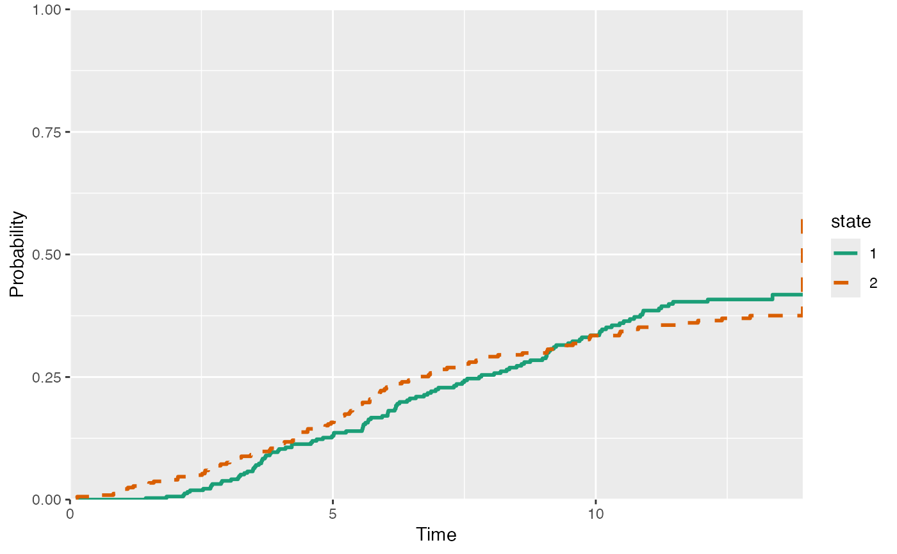
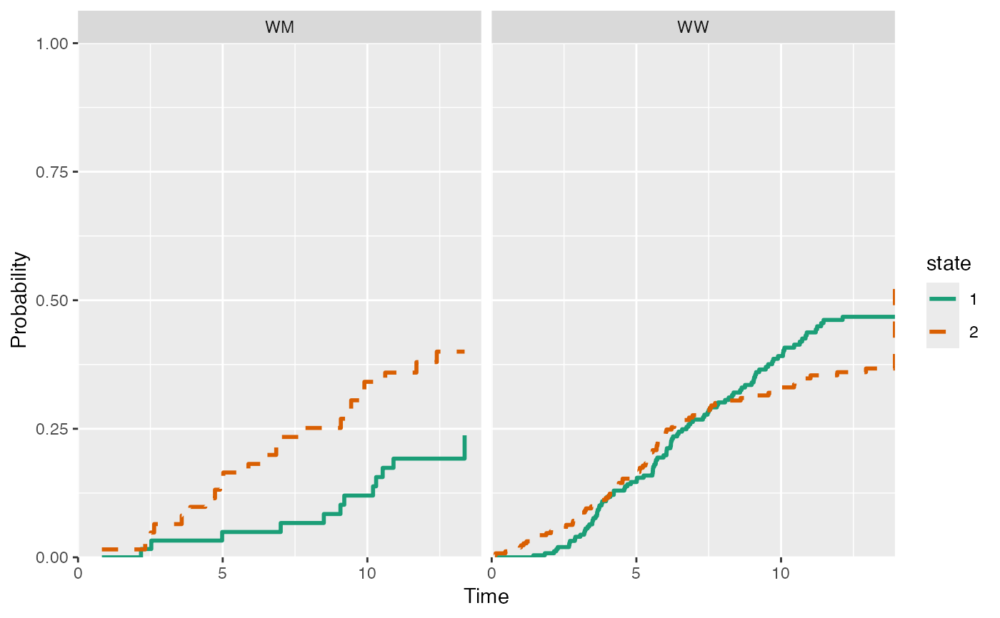

Plot the estimates of the non-parametric Aalen-Johansen estimate of the
cumulative incidence functions (competing risks data). Note this is a method
for mstate::Cuminc and not cmprsk::cuminc. Both return the same
estimates, though the former does so in a dataframe, and the latter in the list.
# S3 method for Cuminc plot( x, use.ggplot = FALSE, xlab = "Time", ylab = "Probability", xlim, ylim, lty, legend, cols, conf.type = c("log", "plain", "none"), conf.int = 0.95, legend.pos = "right", facet = FALSE, ... )
| x | Object of class |
|---|---|
| use.ggplot | Default FALSE, set TRUE for ggplot version of plot |
| xlab | A title for the x-axis; default is |
| ylab | A title for the y-axis; default is |
| xlim | The x limits of the plot(s), default is range of time |
| ylim | The y limits of the plot(s); if ylim is specified for type="separate", then all plots use the same ylim for y limits |
| lty | The line type, see |
| legend | Character vector corresponding to number of absorbing states.
In case of a grouped |
| cols | Vector (numeric or character) specifying colours of the lines |
| conf.type | Type of confidence interval - either "log" or "plain" . See function details for details. |
| conf.int | Confidence level (%) from 0-1 for probabilities, default is 0.95 (95% CI). Setting to 0 removes the CIs. |
| legend.pos | The position of the legend, see |
| facet | Logical, in case of group used for |
| ... | Further arguments to plot or print method |
A ggplot object if use.ggplot = T used, otherwise NULL.
Grouped cumulative incidences can be plotted either in the same plot or in facets,
see the facet argument.
Edouard F. Bonneville e.f.bonneville@lumc.nl
#> patnr time status cause ccr5 #> 1 1 9.106 1 AIDS WW #> 2 2 11.039 0 event-free WM #> 3 3 2.234 1 AIDS WW #> 4 4 9.878 2 SI WM #> 5 5 3.819 1 AIDS WW #> 6 6 6.801 1 AIDS WWsi <- aidssi # No grouping cum_incid <- Cuminc( time = "time", status = "status", data = si ) plot( x = cum_incid, use.ggplot = TRUE, conf.type = "none", lty = 1:2, conf.int = 0.95 )# With grouping cum_incid_grp <- Cuminc( time = "time", status = "status", group = "ccr5", data = si ) plot( x = cum_incid_grp, use.ggplot = TRUE, conf.type = "none", lty = 1:4, facet = TRUE )